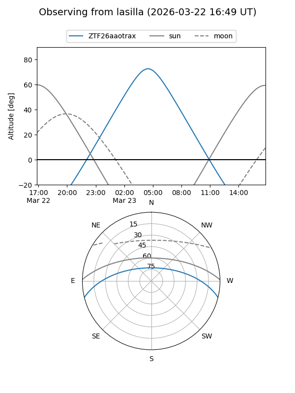
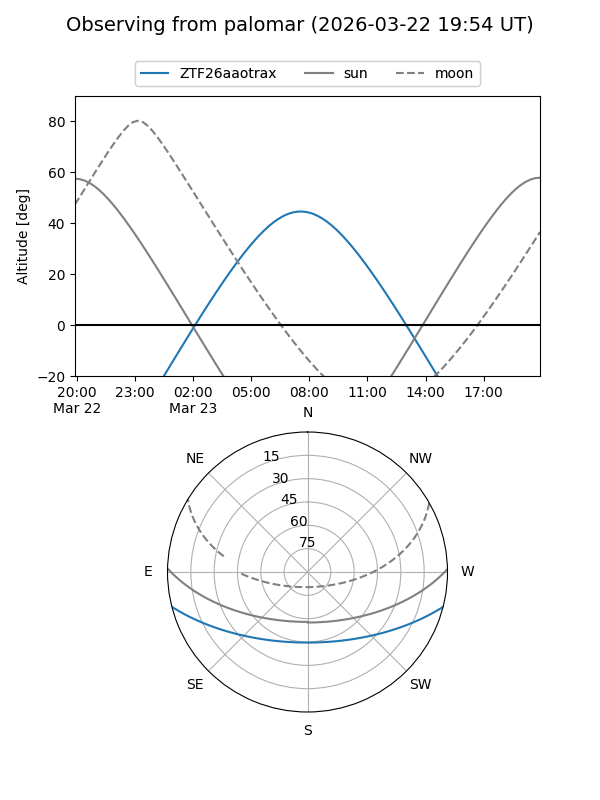

ZTF26aaotrax
Target ZTF26aaotrax at 2026-03-23 08:53
Aliases and brokers:
FINK: link
Lasair: link
ALeRCE: link
alt names
ZTF26aaotrax (ztf,fink_ztf)
Coordinates:
equatorial (ra, dec) = 176.9106,-11.86977
equatorial (HMS+DMS) = 11:47:38.54,-11:52:11.17
galactic (l, b) = (279.2159,+48.04260)
Flags:
Photometry:
last ztfg=17.33
1 ztfg detections
Lightcurve
Visibility


Additional plots